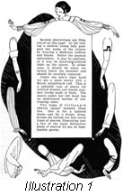
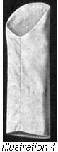
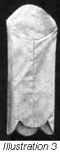
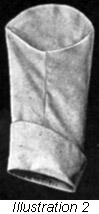
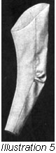
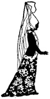

1926—The New-Way Course in Fashionable Clothes-Making
Lesson 43—Sleeves
Sleeves (Illustrations 43-1-2-3 and 4)
There seems to be an ancient tradition among dressmakers that sleeves are more difficult than anything else to make. There is no truth in this belief whatever. If the directions given in this lesson are carefully followed no trouble should be experienced in making any type of sleeve whatever.
Many types of sleeves are used in dressmaking, and each season has its own favorite. There are the loose flowing sleeves and the shirt-waist sleeves, the fitted sleeve and the slashed sleeve—sleeves of every style and every period. Yet, when you have once mastered the methods of simple sleeve-making you should be able to make any kind of sleeve, and add any novel touches you please, without trouble or confusion.
In Lesson 34 we studied the making of shirt waists and shirt waist sleeves. We learned, you remember, that the shirt waist sleeve must be cut and the placket made before the sleeve is sewed at the seam. The making of the placket is taught in Lesson 34. The cuff is attached as though it were an extension facing. You see, you need only to refer to these earlier lessons if any little problem confronts you. In this lesson we will give you only the important features of sleeve-making; for the lesser details refer to former lessons where you will find clear and definite explanations.
The cuff on a shirt waist sleeve may be a plain straight cuff, or it may be a cuff trimmed with plaiting which turns back over itself as in the picture shown. This cuff is cut twice the width it is supposed to be finished, the lower part turning back to cover the cuff and the line where it is attached to the sleeve.
The short sleeve of the shirt-waist type is illustrated. (Illustration 43-2.) This sleeve is cut with one seam but the sleeve reaches only to the elbow. A cuff is attached as a sewed-on facing and turns back over the sleeve. This type of sleeve is very popular for use on summer dresses.
The second illustration shows short sleeves cut in the same manner but reaching below the elbow. It is shaped at the bottom in scallops. If preferred, it could be trimmed with a small ruffle, or it could be bound. A small turned back cuff could also be used on a sleeve of this type. Dresses made of soft material usually have this type of sleeve, while the sleeve with the turned back cuff ending above the elbow is more appropriate for the heavier materials.
The third sleeve illustrated is cut as a shirt waist sleeve with only one seam. This is not put in a cuff but is faced up to the wrong side; sometimes the material of the dress itself is used for this facing although contrasting color in a light-weight material is often used—especially in summer dresses. If the sleeve is of wash material, plain or bias material is used for this facing, which is of the fitted type taught in Lesson 8. This type of sleeve lends itself to smart trimming at the wrist. It may have braid, or bands or buttons or a combination of any of these. A glance through a fashion book will offer many suggestions. The sleeve may be finished off perfectly plain, of course, and on a very plain dress this is the best plan.
Still another type of sleeve is the sleeve that is wide and straight. Although this type of sleeve does not recur each season, it is rather popular and is often used. It has a large armscye and is cut very wide, being almost straight in style. It has only one seam and is faced and finished just as the other loose sleeves are, a fitted facing being used. Not everyone can wear this sleeve, and it is not becoming to every type of dress—one must study the requirements of the figure and of the dress before selecting it. This sleeve is most often used in dresses made of the patterns or robes, as they are called. These robes come in embroidered or beaded patterns, and a shaped sleeve rarely looks well when cut of this material.
The Fitted Sleeve (Illustration 43-5)
We will now study the fitted sleeve and see exactly how it is made. Unless this sleeve is well fitted, well made in every detail, it will spoil the whole effect of the dress. No dress is attractive if the arm is unsightly. A sleeve has no reason whatever to sag from the shoulder to the elbow. When you find that it does, simply lift it on the underarm section until it lies perfectly flat. If you have the dress on the figure or on yourself, have a small tuck pinned in the underarm section of the sleeve beginning at nothing at the front seam and ending up at the back seam. Between these two points take up enough of the sleeve to shorten the under part so that the sleeves will not appear loose, drawn or baggy on the top. This drawn look is caused by the underarm part of the sleeve being too long for the upper part.
The fitted sleeve may be cut in two sections, or it may be cut in one piece. But there should be a seam from the wrist to the elbow. The latter type of sleeve is often more satisfactory, and looks better. It is just as easily made as the two-seam sleeve. To make the two piece sleeve proceed in the following manner:
- Cut the material, being sure that the grain runs in the proper line when the pattern is placed on it. This is a very important detail. If the grain of the material does not run properly in a sleeve, it will pull and twist on the arm.
- Make all construction marks after the sleeve is cut, then baste up the seam at the back, arranging the fulness evenly at the elbow.
- Lay the sleeve on the table, with the upper section down and the seam on the outside. Bring the inside edge of the under section over to meet the inside seam line of the upper section, being careful that the upper section lies flat on the table at all times. When the edges of the two sections meet at the inside seam, the seam of the back part of the sleeve should be drawn to the top. This will make a fold in the upper section an inch or an inch-and-a-half back of this seam. The fold should be perfectly smooth and flat.
- Perhaps your fold does not lie smooth and flat. Then it will be necessary to change the inside seam until it does. Sometimes this draws the under section up or down, or it may change the line of the seam to the wrist or at any place along the edge. It is important to make this change in the seam, for no sleeve will ever be straight on the arm if it does not lie flat on the table. The inside seam should be made as nearly like the original seam as possible.
- Now baste up the inside seam, being sure that it is properly arranged.
- After the sleeve is basted, fit it. If it is too small, let it out on the front seam, or if it is too large, take it in on the front seam.
- Do not disturb the back seam of the sleeve unless it is absolutely necessary. However, it may be found necessary to do some fitting on the back seam below the elbow.
- Remove the sleeve when it is correctly fitted, and mark the alterations. Have the alterations so marked that the sleeve may be taken apart and the other sleeve altered to match. Be sure that the marks are made on both front and back seams where these seams join, as it is very important that the sleeve be put together in exactly the same way as it was when fitted.
- When both sleeves are altered to suit, stitch them and press the seams open. These seams may have to be notched in order to make them flat.
- There are many ways to finish the seams of the sleeve. They may be bound, notched or overcast, according to the material used. But no matter what finish is used, it should be loose and easy enough to prevent the seams from drawing at the edge.
The Fitted Sleeve with Seam to Elbow (Illustration 43-6)
Fitted Sleeve with Seam to Elbow (Illustration 43-6)

Perhaps the sleeve you choose must be cut with a seam to the elbow only. In this case, you will have to use a two-piece sleeve pattern. This type of sleeve is just as simple to mke as the one just taught. Follow these step-by-step directions:
- Pin the back seam in your pattern together to the top of the fulness at the elbow. Match the notches at this point carefully.
- Lay the pattern on the material, with the grain of the material running in the proper direction. Cut the sleeve. When you reach the elbow you will find that you have no material for the seam. Cut straight through the center of the material between the two patterns to the notch at the upper part of the fulness at the elbow. Mark the seam line here, as the seam is extremely narrow and you cannot use any extra material from the sleeves. Mark the notches on the elbow with tailor's chalk—do not cut them.
- Now remove the pattern, and baste the two sections of the sleeve together at the back. Begin at the notch at the lower part of the fulness at the elbow.
- The next step is to run a gathering string along the seam line at the upper section of the sleeve where the fulness is to be. Draw this up and baste it in a seam to the lower section of the sleeve. Allow the seam to run off to nothing at the top just above this fulness.
- The extension above the elbow should be very short. It is made only for the purpose of taking out the point which naturally would be formed at the end of the seam. The seam is really a dart, and we know that no dart should end in a point—it must be slanted off in such a way that a smooth, pointless finish results.
- Proceed with the inside seam. It is made exactly as it would be if the sleeve were to be made in two pieces. The sleeve should be finished similarly, also, except that the stitching should be made from the bottom of the sleeve to the end of the seam above the elbow, and then turned, making a double stitching through the fulness at the elbow. At this point the seam is very narrow and must be strenghtened to keep it from pulling out.
Two-piece sleeves are finished at the wrist in various ways. If the hand can pass through the sleeve without an opening at the seam, the sleeve may be stitched from wrist to top and faced. A cuff of any kind desired may be used as a trimming.
If an opening must be made at the wrist to allow the hand to pass through, it should be at the back seam. Never make an opening on the inside seam of a sleeve. The opening on the back seam may be short, or it may continue entirely to the elbow. The sleeve that opens to the elbow should be finished as an extension placket and trimmed with buttons, or buttonholes may be worked in the upper section and the sleeve buttoned from elbow to wrist. If you prefer, the sleeve may be opened for a short distance t the back and finished as an extension facing. The turned-back cuff may then be used at the wrist. Braid trimming may be used on the cuff.
The shape that the sleeve takes at the wrist may vary accoring to the style of the moment or the wearer's fancy. Sometimes the sleeves are cut to extend over the hand, and are flared. These sleeves look attractive only when they are opened up the back, so that they can be very tight at the wrist.
Applying the Sleeve
It is not enough to know how to make sleeves. You must know how to apply them to the dress after they are made. In fitting the sleeves to the armscye, the sleeves should be put on the arm and pinned to the dress at the shoulder. It should be made to balance well and hang straight and easy from this point. Work from the point of the shoulder to the back of the waist and pin the sleeve in to the armscye. Pin it in under the arm as well as the top, drawing it up enough to make the sleeve hang well without drawing or sagging at any point. After a little practice, you will experience no difficulty in doing this. Only be sure always that the underarm seam is far enough under the body so that when the arm hangs at the side the seam comes very close to the body.
There is still another type of sleeve of which we have not yet spoken. It that type of sleeve in which the underarm seam of the sleeve meets the underarm sleeve of the dress. It is easier to adjust than the sleeve in which the seam comes in front of the underarm seam of the dress, but it is not as comfortable to wear as it usually pulls when the arms are lifted. For this type of sleeve, the softer materials are best. The sleeve is usually cut in such manner that there is less strain than if it were fitted to a dress not intended for the type of sleeve. The shape of the armscye and the shape of the sleeve are different than where the ordinary two-piece sleeve is used.
In most two-piece sleeves, and in some shirt waist sleeves having one seam, the seam falls in front of the underarm seam of the waist. The distance is governed by the wearer's figure. If the waist or lining has a dart in it, you will find it a simple matter to gauge the distance. Simply fold the waist with a true bias line running from the top of the back dart to the armscye. This will mark a point at which the sleeve seam and waist lining should meet. The seam of the sleeve will adjust itself to the proper position if it is balanced form the point of the shoulder and made to fall correctly from this point. It can then be pinned to the garment without difficulty.
All commercial patterns are marked to show the position of the sleeves. But you cannot always depend upon these markings for individual figures vary to such an extent that no pattern can be made exactly correct in details of this nature for all figures. You must practice until you are able to make perfect-fitting sleeves for yourself and others—make them so well in every detail that the very appearance of the finished rock or blouse will be enhanced.
If sleeves happen to be one of your pet "bogies," just decide that you are going to master this lesson thoroughly and that you are not going to let this "bogy" worry you again. Incidentally, study the various types of sleeves on Page 29, and see if you can originate some interesting sleeve styles. Practice of this nature will help you considerably.
Lessons 42 and 43
Questions
- What are the advantages of the one-piece dress?
- When is a one-piece dress appropriate?
- What is the advantage of having the sleeves and vest attached to the lining?
- When is it best to finish the sleeves and neck line?
- How much fullness can be added to the lower edge of a skirt without changing the hip line?
- Why is it better to make a one-piece dress a little longer than other garments?
- Describe briefly the modifications of the shirt-waist sleeve.
- What causes a fitted sleeve to appear drawn?
- Where is fullness allowed along a sleeve seam?
- (a) What kind of seam is used for fitted sleeves?
(b) What finishes for the sleeve seam are advisable for a fitted sleeve? - In a two-piece fitted sleeve which is too tight at the wrist for the hand to go through, where is the opening made?
- Briefly give the method of putting in a sleeve.